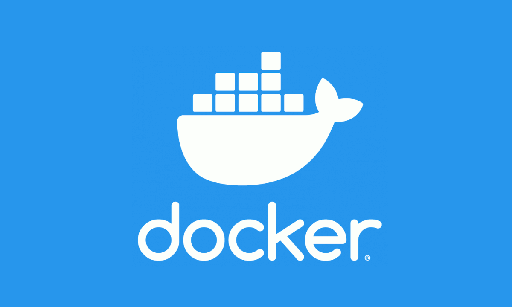

Fundamentos
Del problema de "en mi máquina funciona" a los contenedores modernos.
Ver módulo →Guía técnica · 4 módulos
Docker permite crear contenedores ligeros y portables para desarrollar, probar y desplegar software.
Empezar a aprender
Del problema de "en mi máquina funciona" a los contenedores modernos.
Ver módulo →Cómo Docker aísla procesos con namespaces y cgroups.
Ver módulo →Capas, Dockerfile y buenas prácticas para imágenes seguras.
Ver módulo →Redes, volúmenes y aplicaciones de varios servicios.
Ver módulo →